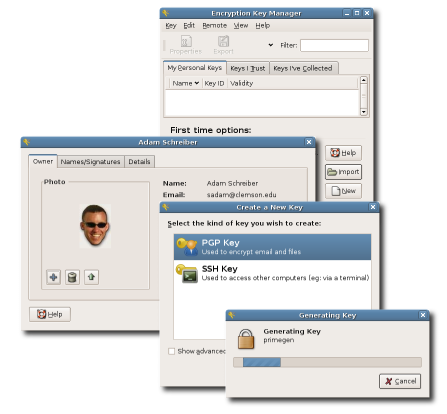

Seahorse is a GNOME application for managing encryption keys. It also integrates with nautilus, gedit and other places for encryption operations.
With seahorse you can...
- Create and manage PGP keys
- Create and manage SSH keys
- Publish and retrieve keys from key servers
- Cache your passphrase so you don't have to keep typing it
- Backup your keys and keyring
- more...
|

|